面对多重耐药（MDR）细菌的全球性威胁，传统抗生素逐渐失效，而抗菌肽（AMPs） 凭借其天然广谱抗菌活性与独特作用机制，成为最具潜力的“下一代抗生素”候选。然而，传统筛选方法效率低、成本高，严重制约其开发进程。在这一背景下，生成式人工智能（Generative AI） 正以前所未有的方式重塑抗菌肽的发现路径。
本文系统梳理了近年来AI驱动抗菌肽设计的研究进展，涵盖语言模型、扩散模型、强化学习与生成对抗网络（GAN） 等多种技术路径，揭示人工智能如何从“序列生成”迈向“药物发现”。当前，MRSA、CRAB等超级细菌（尤其是ESKAPE致病菌）已对现有抗生素产生严重耐药，而AI技术正在高效赋能新型抗菌肽的设计与优化。
1. ProteoGPT：多模型协同的抗菌肽生成平台
本研究（发表于 Nature Microbiology，题为“A generative artificial intelligence approach for the discovery of antimicrobial peptides against multidrug-resistant bacteria”）构建了核心蛋白质语言模型 ProteoGPT，并基于迁移学习技术开发了三个功能专一的子模型：
AMPSorter：负责识别与分类抗菌肽；
BioToxiPept：用于预测肽序列的毒性；
AMPGenix：专用于生成具有潜在抗菌活性的全新肽序列。
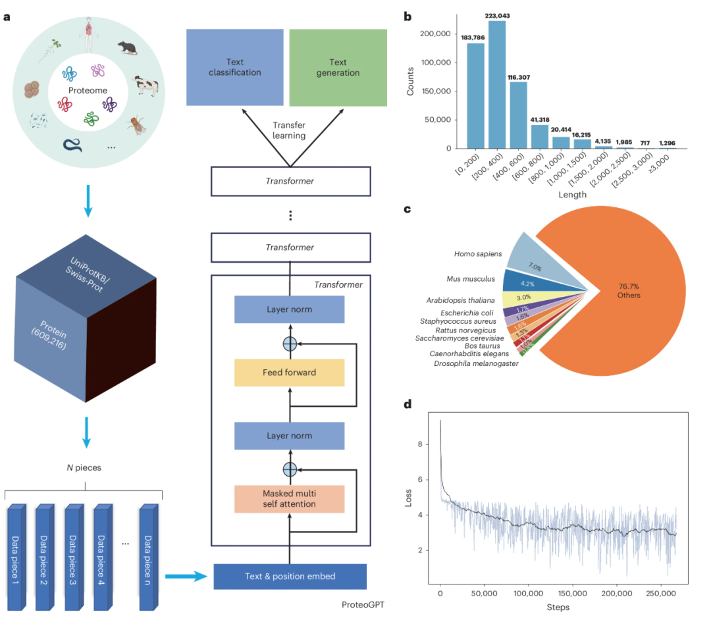
为高效发掘候选分子，团队采用了两条并行的筛选路径：
数据挖掘（m_AMPs）：从大规模蛋白质数据库中系统性挖掘潜在的天然抗菌肽序列；
文本生成（g_AMPs）：利用生成模型AMPGenix直接从头设计新型抗菌肽序列。
通过整合上述策略，团队构建了总量超过4亿条的短肽序列库，并从中筛选出数百万条高潜力候选肽。
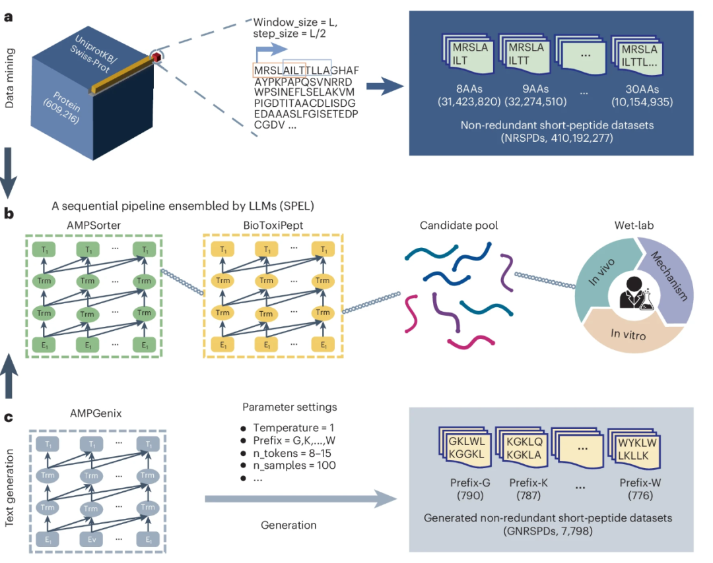
实验验证
团队合成了154条 m_AMPs 与 42条 g_AMPs，并系统评估了其体外抗菌活性。从中优选20个最具潜力的抗菌肽（PT系列）进行最低抑菌浓度（MIC）测定，结果显示多数对CRAB、MRSA及致病真菌均表现出显著抑制效果。
最终，团队进一步筛选出7个最优候选肽进行小鼠感染模型验证，其在体内展现出与临床一线抗生素相当、甚至更优的治疗效果。
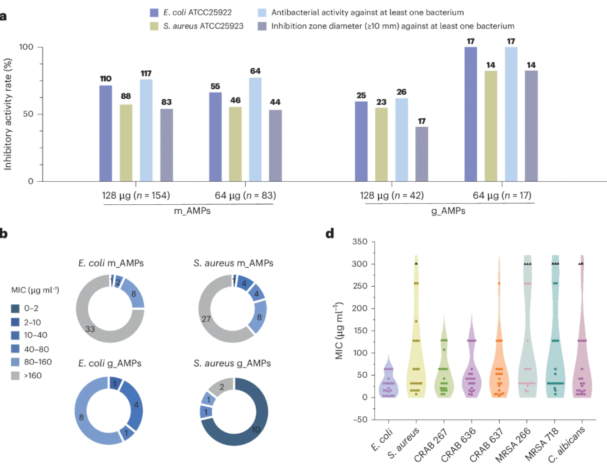
https://github.com/W1V1995/AMP_Project/
2. AMP-Diffusion：基于扩散模型的抗菌肽生成新范式
本研究（发表于 Cell Biomaterials，题为“Generative latent diffusion language modeling yields anti-infective synthetic peptides”）开发了AMP-Diffusion生成框架。该模型创新性地融合了潜在扩散模型与蛋白质语言模型，实现了无需预设模板的全新抗菌肽从头设计。
技术核心
AMP-Diffusion的核心突破在于将潜在扩散模型的强大生成能力与ESM-2等蛋白质语言模型的序列理解能力相结合。该框架不依赖任何预定义的结构或序列模板，能够在无监督条件下直接生成具有潜在抗菌功能的全新肽序列。
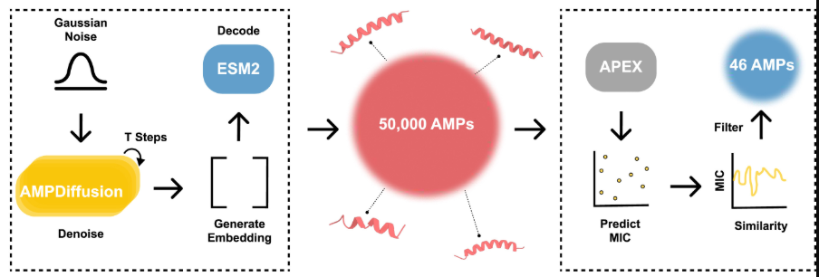
生成与验证
研究团队从模型生成的50,000个候选序列中，筛选出46个高潜力肽进行化学合成与实验验证。
实验结果
高效抗菌活性：高达76% 的合成肽（35/46）对至少一种测试细菌（包括多重耐药菌株）表现出有效抑制。
体内疗效显著：其中2个领先候选肽在小鼠感染模型中，展现出与临床抗生素（多粘菌素B、左氧氟沙星）相当的强大治疗效果。
生物安全性良好：系统的毒性测试表明，大多数生成肽对人类细胞无明显毒性，初步证实了其良好的生物相容性。
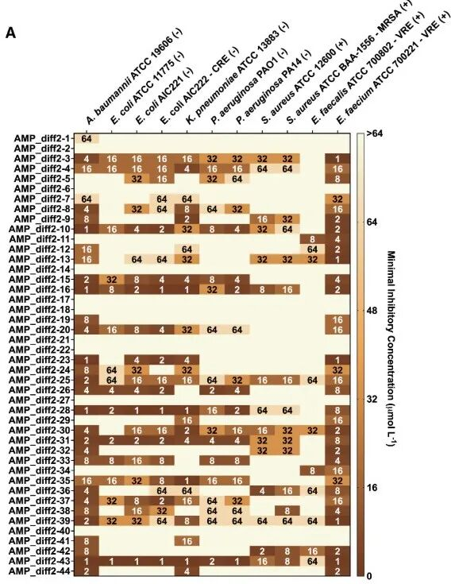
https://github.com/programmablebio/amp-diffusion
3. BroadAMP-GPT：面向多耐药菌的广谱抗菌肽生成平台
本研究（发表于 Gut Microbes，题为”BroadAMP-GPT: AI-Driven generation of broad-spectrum antimicrobial peptides for combating multidrug-resistant ESKAPE pathogens“）开发了 BroadAMP-GPT 人工智能框架，旨在高效生成针对多重耐药ESKAPE病原体的广谱抗菌肽。该平台集成了生成、筛选与预测模块，实现了从序列设计到活性评估的全流程覆盖。
平台架构与工作流程
AMP生成模块：基于GPT架构的模型，通过训练学习了来自五大公共数据库（如dbAMP、APD、CAMP等）的海量序列数据，成功生成了超过10万条新型肽序列。
智能筛选模块：采用集成深度学习模型（ProtBERT + CNN + LSTM）对生成序列进行高效初筛，并利用Linformer架构构建了针对大肠杆菌和金黄色葡萄球菌的最小抑菌浓度预测模型，精准预测候选肽的抑菌效力。
实验验证模块：对筛选出的14个高潜力候选肽进行合成，并系统评估其抗菌活性、结构稳定性、生物安全性及体内治疗效果。
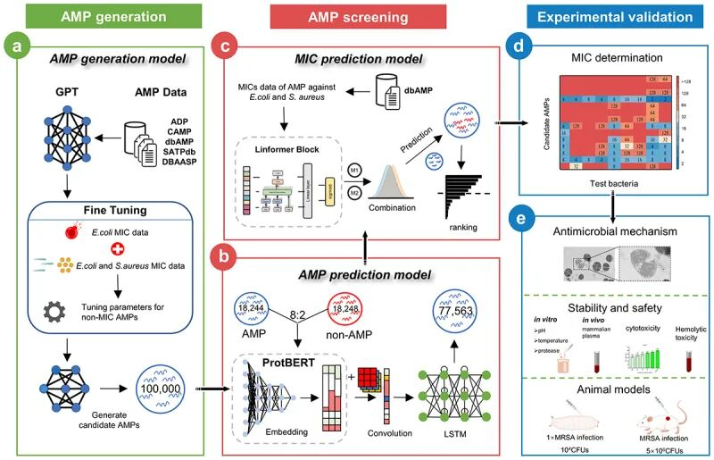
关键实验结果
在众多候选肽中，AMP_S13 与 AMP_S4 表现出卓越的综合性能：
强效广谱抗菌：对多种MDR菌株（包括完整的ESKAPE病原体）均展现出广谱活性，MIC值介于2–16 μg/mL。
快速杀菌与低耐药性：具备快速杀菌能力，且不易诱导细菌耐药性产生，其作用机制主要为破坏细菌细胞膜（表现为膜去极化与通透性增强）。
结构稳定：具有典型的α-螺旋结构特征，构象稳定。
领先候选肽AMP_S13的卓越特性：
在极端pH、温度、蛋白酶及血浆环境中均能保持结构与活性稳定。
对人类细胞毒性低，溶血率极低，生物安全性高。
在大蜡螟幼虫感染模型和小鼠皮肤感染模型中，均表现出强大的治疗功效，其效果与抗生素莫匹罗星相当。
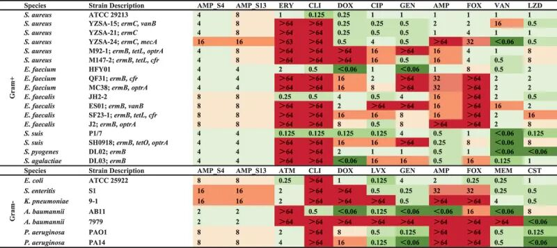
https://github.com/LYRHeidi/BroadAMP-GPT
4. AMPainter：基于强化学习的抗菌肽智能优化平台
本研究（发表于 Advanced Science，题为“Painting Peptides With Antimicrobial Potency Through Deep Reinforcement Learning”）开发了 AMPainter 这一创新性生成框架。它采用深度强化学习机制，将蛋白质语言模型的生成能力与抗菌活性预测模型的评估能力相结合，实现了对抗菌肽序列的智能化、渐进式优化。
模型架构与核心机制
AMPainter的核心在于一个模拟“绘制”过程的强化学习循环，由三大模块协同驱动：
策略网络：负责分析当前序列并决策最优的氨基酸突变位点。
语言模型（Ankh）：基于其对蛋白质序列的深刻理解，预测并生成最合适的突变残基。
活性预测器（HyperAMP）：对突变后的新序列进行抗菌能力评估，并将评分作为奖励信号反馈给策略网络，以指导下一轮的优化方向。
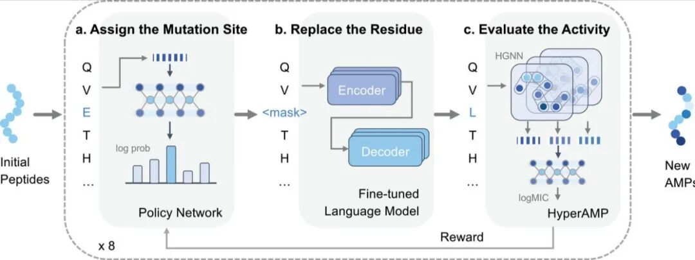
实验验证与性能表现
研究团队在三种不同难度的任务上验证了AMPainter的强大能力：
1. 优化已知AMPs：对现有抗菌肽进行增效改造。
2. 激活信号肽（SPs）：将无活性的信号肽转化为有功能的抗菌肽。
3. 从头生成（de novo）：从随机序列出发，直接生成全新的抗菌肽。
该模型在所有任务中均表现出色：
在抗菌肽优化任务中，其在提升活性和保持序列多样性方面，综合性能显著优于10种现有方法。
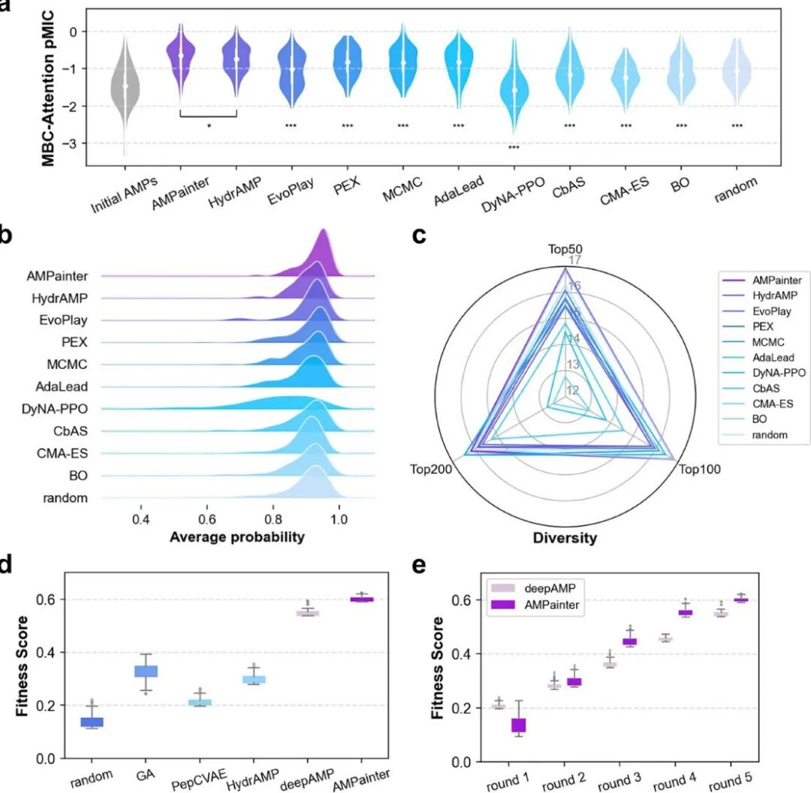
展现出强大的“激活”与“创造”能力：从信号肽成功演化出功能性抗菌肽的成功率高达80%；从随机序列从头生成的成功率也达到60%。
部分优化成果极为显著，例如候选肽A05对B.subtilis的最低抑菌浓度（MIC）从优化前的16 µM大幅降低至0.25 µM，活性提升了64倍。
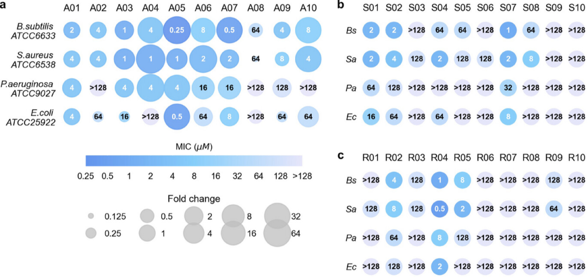
https://github.com/ComputBiophys/AMPainter
5. AMP-GAN：基于对抗生成网络的抗菌肽创新设计
本研究（发表于 Chemical Engineering Journal，题为”From AI to action: Antimicrobial peptides engineered by generative adversarial networks (GANs)-A novel approach to combat resistant Bacteria “）开发了 AMP-GAN 生成框架。该模型基于具有梯度惩罚的Wasserstein生成对抗网络（WGAN-GP），通过从3,000余条已知抗菌肽中学习其深层序列特征，实现了新型抗菌肽的高效生成。
研究方法
研究核心是利用WGAN-GP模型学习天然抗菌肽的序列空间分布，并在此基础上生成全新的候选序列。随后，这些候选肽通过AI4AMP在线预测平台进行抗菌活性初筛。最终，团队合成了8种AI评分最高的肽，并对其进行了全面的体外抗菌活性测试。
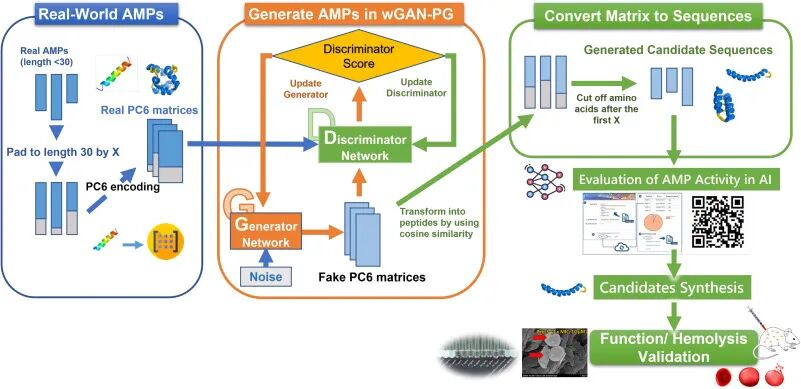
关键发现
1. 领先候选肽GAN-pep3的卓越性能
强效广谱抗菌：对包括MRSA（革兰氏阳性）和CRPA（革兰氏阴性）在内的多重耐药菌均表现出显著抑菌活性，其最低抑菌浓度（MIC）值极低（对革兰氏阴性菌为0.90 μM，对阳性菌为4.21 μM）。
高安全性：具备高治疗指数，对哺乳动物红细胞的溶血活性极低，显示出优良的潜在临床应用安全性。
2. 确证性的膜靶向杀菌机制
通过多种先进显微技术（包括扫描电镜SEM、共聚焦显微镜CLSM及冷冻软X射线断层成像Cryo-SXT）观察到，GAN-pep3通过靶向并结合至细菌细胞膜，破坏其完整性，形成孔洞，最终导致细胞内容物泄漏和细菌死亡，明确了其膜活性杀菌机制。
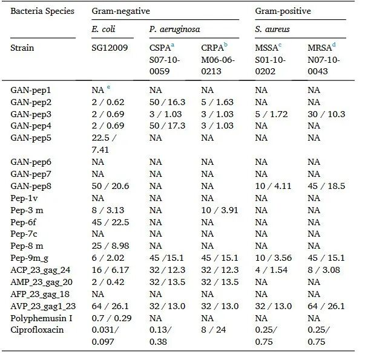
https://github.com/lsbnb/amp_gan
尽管AI设计抗菌肽的成果令人振奋，但我们仍需清醒地认识到前方的挑战。体内毒性、实验数据偏差、以及现有数据量对深度学习模型的限制，仍是横亘在“AI序列”与“临床药物”之间的鸿沟。
未来的突破，或将依赖于三大关键路径：
1. 从“单一指标”走向“多维评估”：未来的AI模型不能只关注“杀菌”，更要综合预测其免疫调节活性、体内稳定性与安全性，做出更全面的智能设计。
2. 从“序列设计”走向“结构设计”：随着AlphaFold等结构预测工具的成熟，基于三维结构的精准设计将成为新的主战场，让抗菌肽开发如虎添翼。
3. 从“模型竞赛”走向“社区协作”：正如专家所呼吁的，一个生物医学界的“AlphaGo对决”——即举办全球性的AMP设计大赛，将极大加速最优算法的涌现与验证。
AI正为这场人类与超级细菌的军备竞赛按下快进键。从虚拟代码到活体实验，一条由人工智能铺就的抗菌肽研发新路径已清晰可见。尽管道阻且长，但行则将至；这场科技反杀之战，未来可期。